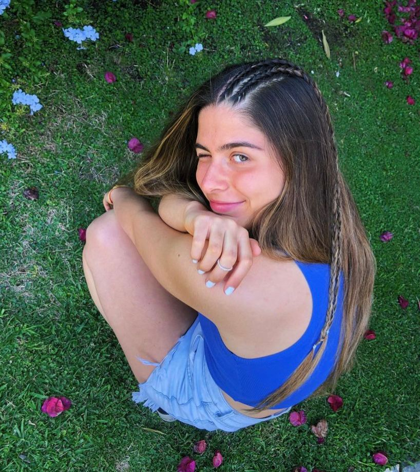

Nuestra historia
Lulu’s nació en 2020 cuando empecé a hacer collares para mi misma por diversión y por tener ganas de usar un accesorio con estilo y originalidad, algo que fuese único, que no se pueda encontrar en todos lados. Empezó siendo un juego que se convirtió en constantes elogios y pedidos de mis amigos o familia y que cada vez se fueron ampliando más. Así, surgieron las redes, la idea de una marca y un emprendimiento.
Misión
Nuestra misión como emprendimiento era clara; queríamos brindar ese toque de originalidad a la imagen de nuestros clientes. Lulu’s entonces se volvió mas que un producto, ahora era un distintivo que te hacía sentir único. De a poco se fue aumentando la cantidad de seguidores, la calidad del contenido digital, el cuidado del packaging y la mejora del producto hasta llegar a donde estamos parados hoy.
Visión
Si bien todavía no llegamos al tramo final de nuestra visión y somos más bien una idea muy nueva, tenemos un objetivo claro: ¡que con nosotros lleves la onda a todos lados!